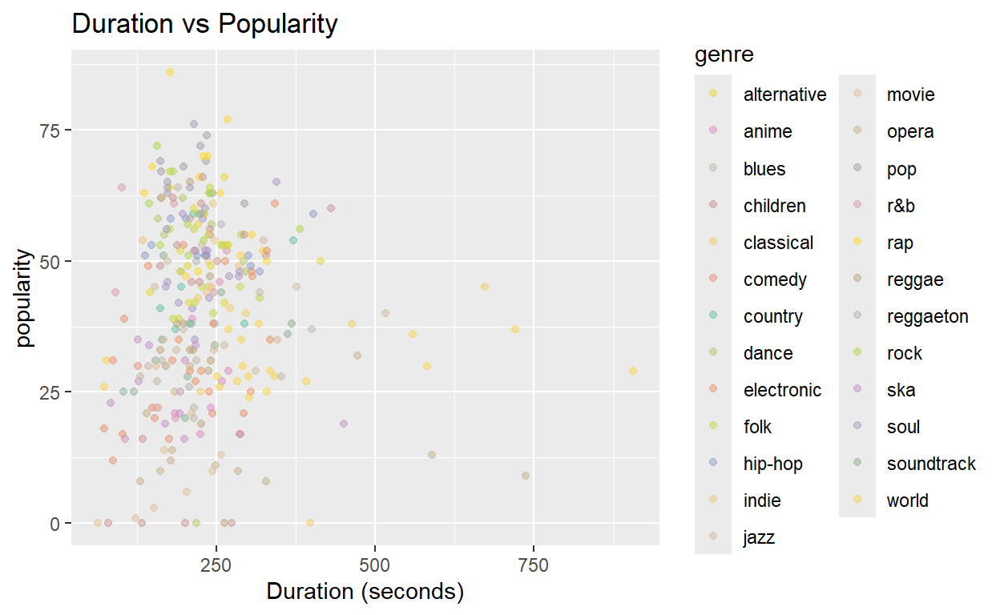

What makes music genres popular?
Music surrounds us, but why do some songs top the charts while others disappear? This project explores what characteristics help songs climb the popularity ladder, using a dataset of tracks from various genres. Well blend data with design to uncover the patterns behind the plays. All visualizations in this story use a customized extension of the Set2 color palette from RColorBrewer to provide vibrant, distinguishable hues across musical genres.
Here are the core audio features used throughout this data story, defined for clarity and context.
Popularity
A value from 0 to 100 assigned by Spotify, based on how often a track is played.
Genre
The musical category of a track (e.g.pop, rock, jazz, classical).
Danceability
How suitable a track is for dancing, based on tempo, beat strength, and rhythm stability (0 to 1).
Energy
Measures intensity and activity. Higher values indicate loud, fast, and dynamic tracks (0 to 1).
Valence
Describes the emotional positivity of a song. High = happy/cheerful, low = sad/angry (0 to 1).
Tempo
The speed of a track in beats per minute (BPM).
Acousticness
Likelihood that a track is acoustic. Higher values mean more acoustic sound (0 to 1).
Duration
The length of the track in seconds.
A horizontal dot chart showing the average popularity of songs in each genre. Genres like pop and rap dominate the top ranks, while niche categories like opera or movie music are on the lower end.
A scatterplot mapping how danceability correlates with popularity. While there is wide variability, we see a concentration of high-popularity songs clustering around 0.5-0.75 danceability. This suggests that rhythm and groove are important for success.
This chart explores whether emotional positivity (valence) makes a song more popular. While some upbeat songs (high valence) do well, overall theres no strong correlation. This implies that both happy and sad songs can succeed, depending more on genre and context.
A violin plot showing how danceability varies across genres. Genres like dance, hip-hop, and pop have high, tightly clustered values, while classical and opera are notably lower. This visualization reinforces how rhythm-heavy genres emphasize movement.

A scatterplot measuring song length (in seconds) against popularity. Surprisingly, duration has little to no consistent relationship with popularity. Both long and short tracks show a wide range in plays, suggesting length doesnt predict success
A dynamic plot where users can hover to explore valence and popularity across genres. The tool helps reveal genre-specific clusters and offers a hands-on view of how emotional tone varies in mainstream music.
This heatmap shows how different audio features correlate with each other and with popularity. The strongest positive correlations are with danceability and energy, while interestingly, acousticness shows a slight negative trend.
A final bar chart ranking which musical traits most correlate with popularity. Danceability and energy rise to the top. Reinforcing the idea that high-energy, rhythm-forward tracks are more likely to succeed in todays music economy. While acousticness seems to be in less demand, with a strong negative correlation.